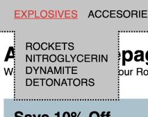
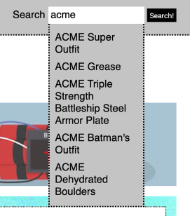
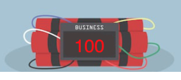
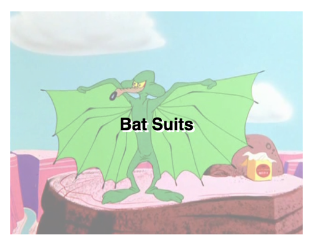
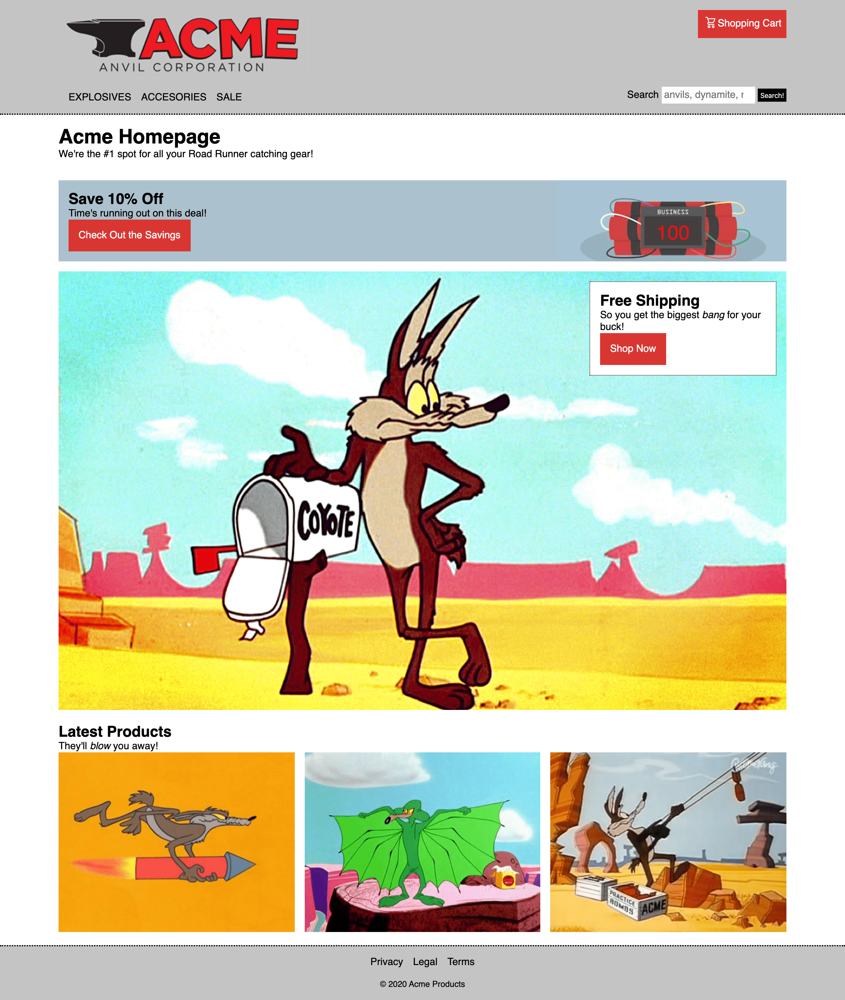
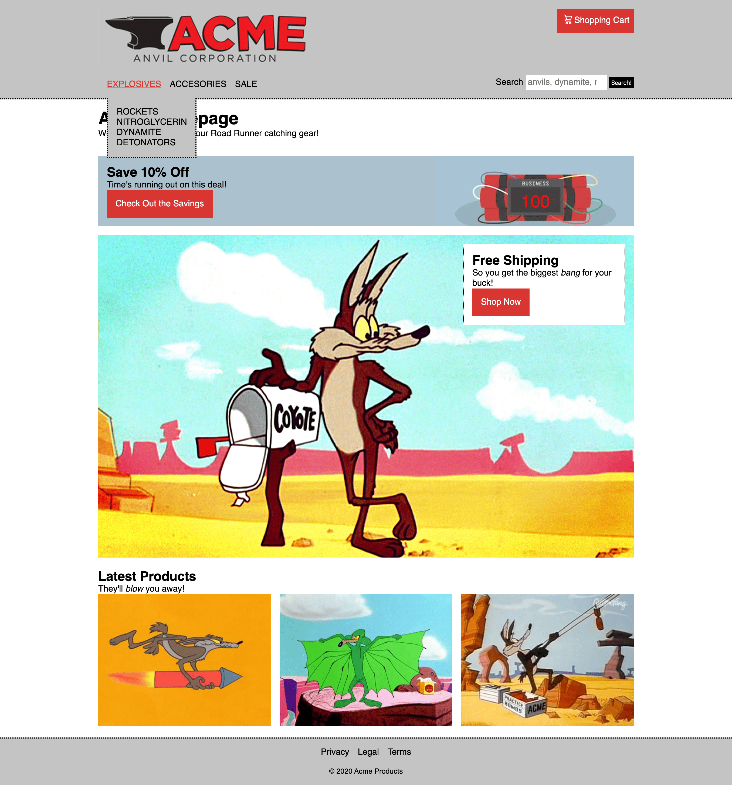
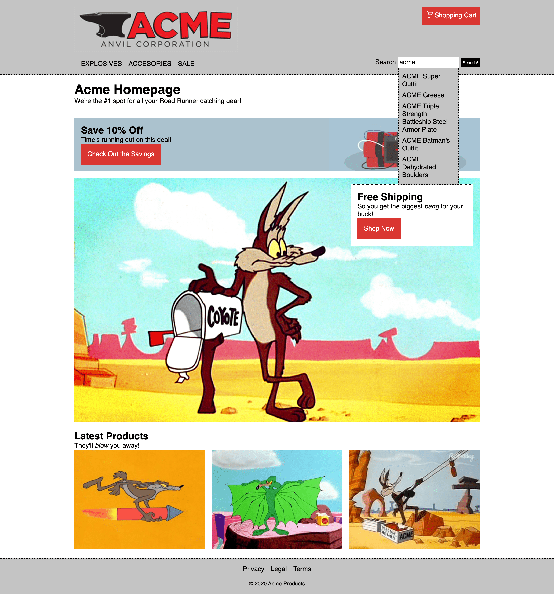
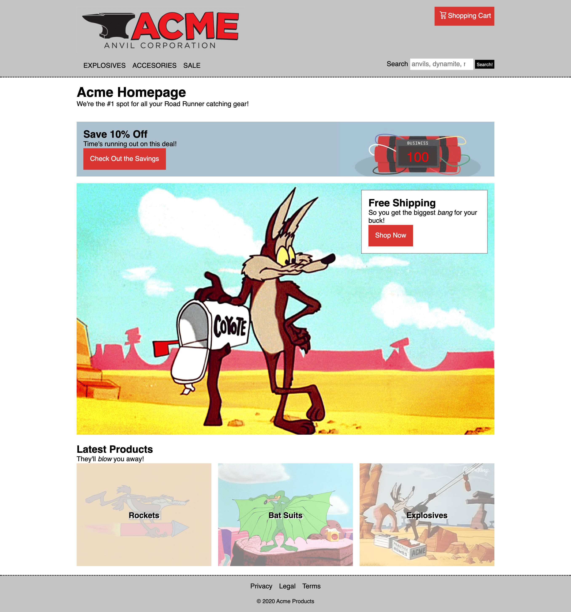
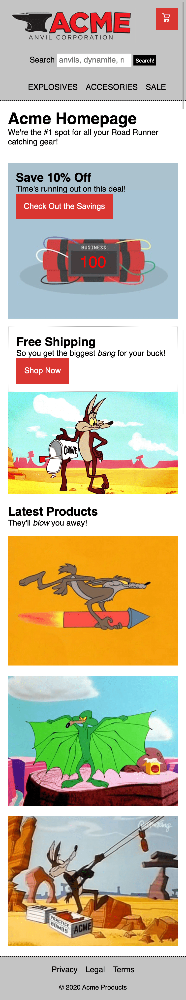

FEZ Cohort HTML, CSS, and JavaScript Challenge
Using the screenshots in the attached .zip file, recreate the layout (see mocks/desktop.png and mocks/mobile.png) and add some interactivity.
We've given you a headstart and created a bare-bones index.html page that you can use.
Please refrain from using any libraries or frameworks (e.g. Bootstrap, jQuery, React, etc.); we really want to see your code and problem-solving abilities!
Interactivity

When clicking on any of the three main navigation elements in the header:
- A sub-navigation menu list should appear instead of linking to a new page.
- The sub-navigation menu should disappear when:
- Clicking the same navigation item.
- Clicking another navigation item.
- Clicking anywhere outside of the sub-navigation element.
- Only one sub-navigation should be open at a time.
-
Use your imagination for the content of the other two sub-navigation menus, but if you need some help we used:
- Accessories: Anvils, Roller Skates, Suction Cups, Dehydrated Boulders
- Sale: Aspirin, Bird Seed, Invisible Paint

When typing in text in the header's search form (e.g. anvils, explosives, acme, etc.):
- An HTTP request should be made using a global variable named
searchUrl for the URL (this is defined in json.js).
- Filter the array of results (a JSON array of objects will be returned) by your search term.
- The JSON array of objects will be in a format similar to:
[
{ name: 'Product Name 1' },
{ name: 'Product Name 2' },
{ name: 'Product Name 3 }
]
- It's up to you to decide if the text must match exactly, or if there's a partial match between your search term and the results, but rememeber that string comparisons in JavaScript are case-sensitive!
Countdown Timer

In the first banner's dynamite graphic, there's a placeholder to create a timer:
- Create a placeholder element in your HTML (this can be any HTML element, but keep semantics in mind).
- In your JavaScript, generate a random number between 100 and 999 and assign it to a variable.
- Every second decrement this variable and set its new value in the placeholder.
- Once the timer hits zero, stop the countdown interval from running anymore.
- Add some flair to your timer, once it hits zero play an explosion sound effect (we've provided one in the sounds directory: sounds/explosion.wav)

When hovering over either of the three latest products:
- The image should have some transparency (hint: it's 50% transparent)
- And, the associated category name should be centered both vertically and horizontally
- The categories are: Rockets, Bat Suits, and Explosives
- Hint: This can be done with CSS and/or JavaScript.
Helpful Jumpstarters
- The font used is: Helvetica, Arial, sans-serif at 16px
- The header background color is: rgb(196, 196, 196)
- The red color is: rgb(218, 55, 50)
- The first banner's blue/grey color is: rgb(172, 194, 206)
- The maximum width of the content area is 1024px
- If making it to the responsive portion, the mobile breakpoint begins with the viewport is less than or equal to 650px.
Since this is your foray into combining JavaScript with HTML and CSS to create truly interactive experiences, we've provided some tips below:
HTML
- Prioritize the structure--it makes working with CSS and JavaScript much easier.
- Utilize semantic HTML5 elements; i.e. use the correct tag/element for the type of content.
- Keeping it simple is often the best solution!
- Remember: a web page always needs a title!
CSS
- We've provided desktop and mobile mockups, so focus on the desktop version first.
- Don't get too concerned with pixel-perfect spacing; we're looking for the overall layout and visuals.
- If you're comfortable working with media queries, create a responsive layout that looks like the mobile.png screenshot.
JavaScript
- Although this is your first foray into changing the page with Javascript, we've provided resources below.
- Even though Javascript manipulate a lot of the page, if you can build something in HTML or CSS, use those instead.
Resources
Screenshots
Desktop

Navigation

Search

Hover

Mobile
